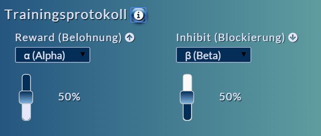
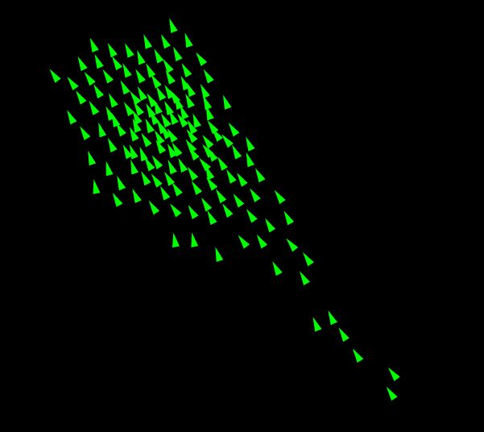
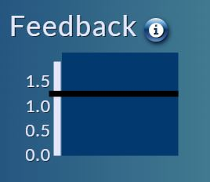

100%
.jpg)
10 s
0
Kalibration
10 s
0
Kalibration
Ein guter Kontakt zwischen EEG-Sensoren und Kopfhaut ist wichtig für eine qualitativ hochwertige Messung und damit für
ein gutes Neurofeedback.
Die Kreise in der linken oberen Ecke zeigen die Kontaktqualität an:
Tipp:
Je weniger Sie sich bewegen, desto einfacher wird es, einen guten Kontakt zwischen Kopfhaut und Elektroden herzustellen. Versuchen Sie, sich während der Messungen möglichst wenig zu bewegen, indem Sie nicht sprechen und Ihre Augen so wenig wie möglich bewegen.
Hier werden die für das Neurofeedback verwendeten Elektroden ausgewählt.
Das EEG-Gerät, das deine Gehirnaktivität misst, hat 4 davon:
Zwei an den Ohren und zwei auf der Stirn.
Die Namen der Elektrodenpositionen werden innerhalb der Kreise links auf dem Bildschirm angezeigt.
Sie werden anhand des internationalen 10-20-Systems festgelegt.
Dieses System wurde entwickelt, da sich Schädelform und -größe bei jedem Menschen unterscheiden.
Durch das 10-20-System wird es möglich, eine einheitliche Platzierung der Elektroden zu erreichen,
damit Messergebnisse von verschiedenen Personen verglichen werden können.
Beim Neurofeedback werden Frequenzbänder aus dem menschlichen EEG ausgesucht, die "trainiert" werden sollen.
Diese Auswahl findet hier statt.

Auf der linken Seite (Belohnung) wird das Band ausgewählt, dessen Aktivität verstärkt werden soll.
Auf der rechten Seite kann ein zweites Frequenzband ausgewählt werden, dessen Aktivität durch das Neurofeedback verringert werden soll.
Die Farbe und Geschwindigkeit der Dreiecke auf dem Bildschirm verändert sich gleichzeitig mit dem Feedback-Balkengraphen.
Der Stand des Graphen hängt davon ab, wie viel Aktivität es in den Frequenzbändern gibt, die unter dem Punkt "Trainingsprotokoll"
ausgewählt wurden.
Je höher der Graph über den schwarzen Balken kommt, desto satter wird die grüne Färbung der Dreiecke und desto langsamer bewegen sie sich.


Tipp:
Je länger man es schafft, die Dreicke grün zu färben, desto mehr Punkte bekommt man.
Bei der Messung von EEG kommt es oft zu Störungen des Signals durch Muskel- und Augenbewegungen.
Die Signalverunreinigungen werden auch "Artefakte" genannt.
Wenn Sie blinzeln oder Ihre Kieferknochen aufeinanderpressen, wird das anhand der Balkengraphen angezeigt.

Tipp:
Versuchen Sie sich während des Neurofeedbacks möglichst wenig zu bewegen, damit die Signalqualität gut ist und Sie ein präzises Feedback erhalten.
Beim Neurofeedback wird Ihre Gehirnaktivität mit Hilfe eines EEG-Geräts gemessen.
Sie erhalten anhand der Dreiecke auf dem Bildschirm eine Rückmeldung darüber, was gerade in Ihrem Kopf passiert.
Neurofeedback wird zu verschiedenen Zwecken angewendet. Dazu gehören z.B. die Behandlung von
ADHS (Aufmerksamkeits-Defizit-Hyperaktivitätsstörung), Tinnitus, Migäne und anderen Erkrankungen.
Es kann aber auch in anderen Bereichen eingesetzt werden, wie beim Entspannungstraining.
Keine Sorge:
Das Gerät kann Ihre Gedanken nicht lesen.Die Gehirnaktivität des Menschen lässt sich als "Schwingungen" mit Frequenzen von ungefähr 1 - 80 Hz beschreiben. Die Aktivität ist dabei in 5 Frequenzbänder aufgeteilt, die nach griechischen Buchstaben benannt sind und unterschiedliche Bedeutungen haben:

Delta-Wellen (δ, 1 - 4 Hz):
Diese Wellen findet man bei Erwachsenen verstärkt in der Tiefschlafphase.
Theta-Wellen (δ, 4 - 8 Hz):
Beim Übergang vom Wach- in den Schlafzustand treten Theta-Wellen vermehrt auf.
Alpha-Wellen (α, 8 - 13 Hz):
Man misst diese Wellen vermehrt in Personen, die wach und relativ entspannt sind.
Beta-Wellen (β, 13 - 30 Hz):
Beta-Wellen kommen dann vermehrt vor, wenn sich eine Person konzentriert, also z.B. Matheaufgaben im Kopf löst.
Gamma-Wellen (γ, > 30 Hz):
Diese Wellen treten auf, wenn eine Person sich stark konzentriert oder gerade etwas Neues lernt.